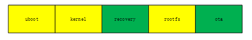

模块介绍
OTA 是一种通过网络从服务器上下载更新文件，对本地系统或者文件进行升级的升级方式，便于为用户及时更新系统和应用程序。
| 术语 | 定义 | 注释说明 |
|---|---|---|
| OTA | Over The Air | 远程升级 |
Luban OTA 方案介绍
Luban OTA 系统方案具有如下特点：
-
基于 SWUpdate 平台实现，使用 Recovery 系统方案。
-
程序 kernel 和 Rootfs 称为主系统。
-
在主系统之外，增加一个 Recovery 系统，包含 kernel 和 initramfs，用来对主系统程序进行升级。
-
为了便于演示，增加 ota 分区，用于保存 OTA 升级包。
OTA 功能新增分区如下图所示：

-
黄色代表原始分区
-
绿色代表新加分区
-
recovery 分区用来存放 Recovery 系统程序 -
ota 分区用来存放 OTA 升级包
-
Luban OTA 升级过程
Luban OTA 升级过程如下所示：
-
主系统升级 Recovery 系统文件，Recovery 系统升级主系统文件。
升级脚本文件名称为 swupdate_cmd.sh。
-
主系统升级 Recovery 系统程序、U-Boot 等。
环境变量采用 U-Boot 环境变量。在 U-Boot 启动时，通过环境变量决定启动主系统还是 Recovery 系统。
-
Recovery 系统升级主系统 kernel、Rootfs、App 等。
一次完整的升级活动，需要重启两次。
-
升级过程中出现异常掉电，下次启动还能够继续完成剩下的升级过程。
SWUpdate 功能介绍
-
可以给 eMMC、SD、NOR 和 NAND 等介质升级程序
-
可以更新 UBI 卷的程序, 重新创建 UBI 卷,建立新的 UBI 卷, 配置分区的大小
-
支持使用 zlib 库压缩镜像
-
支持识别和使用 U 盘, 支持本地升级
-
支持更新文件系统里面的单个文件, 必须指定该文件的路径
-
使用结构化语言来描述镜像, libconfig 语法
-
支持设置/删除 U-Boot 变量
-
多种获取软件的接口, 本地存储: USB,SD,UART,…
-
OTA/远程, 使用 Mongoose 服务器
-
通过配置可以检查软件和硬件之间的兼容性
-
支持镜像提取, SWUpdate 以流的方式接收软件, 不进行临时存储
-
掉电安全
-
镜像在升级之前经过身份认证和校验
-
通过 make menuconfig 进行管理
| 文件 | 说明 |
|---|---|
| CONFIG_UBOOT=y | 支持 U-Boot |
| CONFIG_DOWNLOAD=y | 使能通过 libcurl 的方式下载程序 |
| CONFIG_DOWNLOAD_SSL=y | 在使用 libcurl 时使能 ssl 校验 |
| CONFIG_WEBSERVER=y | 编译 web 服务器, 设备端作为服务器使用 |
| CONFIG_HASH_VERIFY=y | 解析升级包时使能 sha256 校验 |
| CONFIG_BOOTLOADERHANDLER=y | 在升级过程中允许修改 U-Boot 环境变量 |
| CONFIG_CFI=y | 允许给 flash 烧录程序 |
| CONFIG_RAW=y | 默认烧录方式, 给 eMMC 使用 |
| CONFIG_SHELLSCRIPTHANDLER=y | 支持 shell 脚本升级 |
OTA 升级获取方式
按照获取 OTA 升级包的方式，OTA 可以分为两种情况：
-
本地升级
-
网络升级方式
-
Luban 平台配置好了一个
ota 分区，用来存放 OTA 升级包, 用户可以通过 AiBurn 的方式将 OTA 升级包烧录到具体开发板上, 直接验证 OTA 本地升级功能。 -
用户如果搭建好了服务器, 并能将服务器上 OTA 升级包下载到本地
ota 分区，希望通过 Luban OTA 系统实现单独升级功能, 可以直接通过 OTA 本地升级方式实现。 -
如果本地空间不够, 可以使用 SD 卡，U 盘充当本地存储空间，存放 OTA 升级包。
-
Luban OTA 网络升级方式依赖服务器，用户如果采用网络方案，需要搭建好 HTTP 或 FTP 服务器，Luban OTA 系统可以远程获取服务器里面的数据进行升级。